Это официальный каталог экзаменационных вопросов Министерства транспорта и цифровой инфраструктуры; отдел
водных путей и судоходства. Он состоит из 72 базовых вопросов и 181 специального вопроса по внутренним водным путям.
Из этого комплекса вопросов составляются 15 различных экзаменационных билетов по 30 вопросов каждый (7 базовых
вопросов и 23 специальных вопроса по внутренним водным путям). Экзамен проводится по системе Single Choice (выбор
одного ответа) Немецким союзом моторных яхт и Немецким парусным союзом. К каждому вопросу предлагаются четыре
варианта ответа. Только один из них правильный и должен быть отмечен на экзамене. Здесь правильный ответ отмечен
зелёной галочкой. Вам нужно запомнить только этот ответ.
В течение 45 минут необходимо правильно отметить не менее 23 из 30 ответов. При этом следует учитывать, что
должны быть правильно отвечены 5 из 7 базовых вопросов и 18 из 23 специальных вопросов по внутренним водным путям.
Если это минимальное требование не выполнено хотя бы в одном из разделов, весь теоретический экзамен считается не
сданным.
|
1. Что следует сделать, если перед началом плавания не установлено, кто является судоводителем?
|
✓ Ответственный судоводитель должен быть назначен.
□ Ответственный судоводитель должен быть выбран.
□ Владелец удостоверения на управление спортивным судном должен принять управление судном.
□ Владелец удостоверения на управление спортивным судном должен взять на себя ответственность.
|
|
2. В каких случаях запрещается управлять спортивным судном или самостоятельно определять его курс или
скорость?
|
✓ Если вследствие физических или психических недостатков либо вследствие употребления алкогольных
напитков или других опьяняющих средств человек не способен безопасно управлять судном, либо если концентрация
алкоголя в крови составляет 0,5 ‰ или более.
□ Если вследствие физических или психических недостатков либо вследствие употребления алкогольных напитков или
других опьяняющих средств человек не способен безопасно управлять судном, либо если концентрация алкоголя в крови
составляет 0,8 ‰ или более.
□ Если вследствие физических или психических недостатков либо вследствие употребления алкогольных напитков или
других опьяняющих средств человек не способен безопасно управлять судном, либо если концентрация алкоголя в крови
составляет 1,0 ‰ или более.
□ Если вследствие физических или психических недостатков либо вследствие употребления алкогольных напитков или
других опьяняющих средств человек не способен безопасно управлять судном, либо если концентрация алкоголя в крови
составляет 0,3 ‰ или более.
|
|
3. Когда судно считается находящимся в движении?
|
✓ Когда оно не стоит на якоре и не пришвартовано к берегу.
□ Когда оно не стоит на якоре, не пришвартовано к берегу и имеет ход относительно грунта.
□ Когда оно не сидит на мели, не стоит на якоре и не ограничено в маневрировании.
□ Когда оно не пришвартовано к берегу, не стоит на якоре и имеет ход относительно воды.
|
|
4. Какова продолжительность короткого звукового сигнала?
|
✓ Около 1 секунды.
□ Около 2 секунд.
□ Менее 1 секунды.
□ Менее 4 секунд.
|
|
5. Какова продолжительность длинного звукового сигнала?
|
✓ Около 4–6 секунд.
□ Около 2–6 секунд.
□ Около 1–2 секунд.
□ Около 4–6 секунд
|
|
6. Когда парусное судно считается моторным судном?
|
✓ Когда оно одновременно движется с использованием двигателя.
Когда оно оснащено двигателем.
Когда под парусом оно не имеет хода относительно воды.
Когда под парусом оно не имеет хода относительно грунта.
|
|
7. Какой сигнал днём должно дополнительно показывать парусное судно, считающееся моторным?
|
✓ Чёрный конус вершиной вниз.
□ Чёрный конус вершиной вверх.
□ Чёрный ромб.
□ Два чёрных шара вертикально один над другим.
|
|
8. Какая сторона называется наветренной (Luvseite)?
|
✓ Сторона, обращённая к ветру.
□ Сторона, обращённая от ветра.
□ Сторона справа по ходу движения.
□ Сторона слева по ходу движения.
|
|
9. Какая сторона называется подветренной (Leeseite)?
|
✓ Сторона, обращённая от ветра.
□ Сторона, обращённая к ветру.
□ Сторона справа по ходу движения.
□ Сторона слева по ходу движения.
|
|
10. Когда должны включаться или показываться огни судна?
|
✓ От захода солнца до восхода солнца и при ограниченной видимости.
□ От восхода до захода солнца и при ограниченной видимости.
□ С 18:00 до 06:00 и при ограниченной видимости.
□ В темноте, при плохой погоде и ограниченной видимости.
|
|
11. Для чего предназначены навигационные огни?
|
✓ Они показывают направление движения и положение моего судна.
□ Они показывают курс и скорость судна.
□ Они показывают направление движения и позицию судна.
□ СОни показывают направление движения и курс судна.
|
|
12. Какой фонарь может нести парусное судно длиной менее 20 м вместо бортовых огней и кормового огня?
|
✓ Трёхцветный фонарь на вершине или возле вершины мачты.
□ Двухцветный фонарь на хорошо видимом месте.
□ Трёхцветный фонарь на хорошо видимом месте.
□ Двухцветный фонарь на или возле вершины мачты.
|
|
13. Какие огни должно нести парусное судно, которое одновременно движется с использованием двигателя?
|
✓ Огни, предписанные для моторного судна.
□ Огни, предписанные для парусного судна.
□ Два красных круговых огня вертикально один над другим.
□ Бортовые огни красный и зелёный и один красный круговой огонь.
|
|
14. Как расходятся два моторных судна, приближающиеся на встречных курсах?
|
✓ Каждое судно должно изменить курс вправо.
□ Каждое судно должно изменить курс влево.
□ Наветренное судно должно уступить дорогу подветренному судну.
□ Подветренное судно должно уступить дорогу наветренному.
|
|
15. Два моторных судна приближаются на пересекающихся курсах. Существует опасность столкновения. Кто должен
уступить дорогу?
|
✓ Судно должно уступить дорогу, если другое судно находится у него по правому борту.
□ Судно должно уступить дорогу, если другое судно находится у него по левому борту.
□ Наветренное судно должно уступить дорогу подветренному.
□ Подветренное судно должно уступить дорогу наветренному.
|
|
16. Каково значение следующего звукового сигнала?
(*-*-*-)
|
✓ Сигнал «Держитесь подальше», немедленно покиньте опасную зону.
□ Общий сигнал опасности и предупреждения.
□ Якорное судно длиной более 100 м.
□ Буксируемый конвой длиной более 200 м, ограниченный в своих маневренных возможностях.
|
|
17. Каково значение следующего щитового знака?

|
✓ Обгон запрещен.
□ Обгон (Begegnungsverbot) запрещен.
□ Обгон запрещен для транспортных средств длиной менее 20 м.
□ Обгон запрещен для транспортных средств длиной более 20 м.
|
|
18. Каково значение следующего щитового знака?

|
✓ Запрещено расхождение на узком участке.
□ Запрещено расхождение для судов длиной более 12 м.
□ Запрещён обгон; следует ожидать встречное движение.
□ Запрещён обгон для всех судов.
|
|
19. Каково значение следующего щитового знака?

|
✓ Избегать волн и сильного волнения.
□ Опасный участок берега; опасность подмыва; минимальная дистанция прохода 100 м.
□ Водный путь, по которому можно безопасно проходить в любое время; нет опасности волнения.
□ Водный путь, по которому не всегда можно безопасно проходить; опасность волнения.
|
|
20. Каково значение следующего щитового знака?

|
✓ Максимальная скорость 40 км/ч, которую необходимо соблюдать на следующем участке от места установки знака.
□ Максимальная скорость на правой стороне фарватера.
□ Максимальная дистанция в метрах, которую необходимо соблюдать.
□ Сужение фарватера до 40 м.
|
|
21. Каково значение следующего щитового знака?

|
✓ Ожидание перед подвижными мостами, плотинами и шлюзами.
□ Постоянное закрытие участка водного пути.
□ Предписание подать длинный звуковой сигнал.
□ Дальнейшее движение спортивных судов запрещено.
|
|
22. Каково значение следующего щитового знака?

|
✓ Якорная стоянка запрещена для всех судов.
□ Якорная стоянка запрещена для малых судов менее 12 м./p>
□ Якорная стоянка запрещена для малых судов более 12 м.
□ Запрещено становиться на якорь и швартоваться.
|
|
23. Каково значение следующих щитовых знаков?
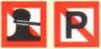
|
✓ Запрещено швартоваться и стоять.
□ Запрещено швартоваться и стоять спортивным судам.
□ Запрещено швартоваться и стоять спортивным судам длиной более 12 м.
□ Запрещено швартоваться и стоять коммерческим судам.
|
|
24. Каково значение следующего щитового знака?

|
✓ Подать один длинный звуковой сигнал.
□ Подать один короткий звуковой сигнал.
□ Подать два длинных звуковых сигнала.
□ Подать один короткий и один длинный сигнал.
|
|
25. Каково значение следующих щитовых знаков?

|
✓ Водные участки, где разрешено катание на водных лыжах или гидроциклах.
□ Учебный участок, требующий разрешения, для катания на водных лыжах или гидроциклах.
□ Катание на водных лыжах или гидроциклах разрешено; воднолыжники имеют приоритет.
□ Учебный участок без необходимости разрешения для катания на водных лыжах или гидроциклах.
|
|
26. Каково значение следующего щитового знака?
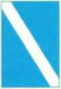
|
✓ Конец ограниченного или запрещенного участка.
□ Участок фарватера для парома, который не работает свободно.
□ Пересечение фарватера разрешено.
□ Смена сторон фарватера разрешена.
|
|
27. Каково значение следующего щитового знака?
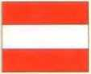
|
✓ Запрет на проход и закрытие судоходства.
□ Судоходство для маломерных судов запрещено.
□ Судоходство запрещено, но разрешено для маломерных судов без работающего двигателя.
□ Судоходство запрещено, но разрешено для маломерных судов без работающего двигателя.
|
|
28. Что означают следующие навигационные знаки?
|
✓ Мост, плотина или шлюз закрыты.
□ Объект закрыт навсегда.
□ Сигнал остановки для всех судов.
□ Исключительное препятствие для судоходства.
|
|
29. Что означают следующие навигационные знаки?
|
✓ Объект закрыт навсегда.
□ Мост, плотина или шлюз закрыты.
□ Стоп-сигнал для всех судов.
□ Исключительное препятствие для судоходства.
|
|
30. Что означают эти огни перед шлюзом?
|
✓ Вxod свободен, встречное движение запрещено.
□ Вxod свободен, ворота закрыты.
□ Включена блокировка, проезжайте на въездном светофоре в правильном порядке.
□ Включена блокировка, проезжайте на выездном светофоре в правильном порядке.
|
|
31. В каком информационном листке содержатся рекомендации по защите редких животных и растений, а также по поддержанию чистоты водоемов?
|
✓ 10 золотых правил для любителей водных видов спорта.
□ 15 золотых правил для любителей водных видов спорта.
□ 10 основных правил для любителей водных видов спорта.
□ 15 правил поведения для любителей водных видов спорта.
|
|
32. Как мы можем помочь сохранить и улучшить среду обитания растений и животных в водоемах и водно-болотных угодьях?
|
✓ Проявляя экологическую сознательность и соблюдая «Десять золотых правил для любителей водных видов спорта на природе».
□ Проявляя экологическую сознательность и соблюдая «Десять основных правил водных видов спорта».
□ Проявляя осмотрительность и соблюдая правила дорожного движения.
□ Управляя транспортным средством с предусмотрительностью и маневрируя в соответствии с правилами дорожного движения.
|
|
33. Почему следует держаться как можно дальше от зарослей тростника и густо заросших растительностью береговых линий?
|
✓ Потому что эти места часто являются местами отдыха и размножения особо уязвимых птиц или нерестилищами рыб.
□ Потому что в этих местах существует риск посадки на мель.
□ Потому что растения могут заблокировать винт.
□ Потому что купающихся в этих местах трудно заметить.
|
|
34. Почему малому судну не следует приближаться слишком близко к большому движущемуся судну?
|
✓ Оно может перевернуться из-за носовой или кормовой волны или столкнуться с судном из-за эффекта всасывания.
□ Слишком близкое приближение является нарушением основных правил судоходства.
□ Потому что в противном случае оно не сможет избежать столкновения с большим движущимся судном.
□ Его могут ударить носовая или кормовая волна.
|
|
35. Почему рекомендуется швартоваться против течения и ветра?
|
✓ Потому что судном при этом легче маневрировать.
□ Потому что уменьшается тяга и волновое воздействие.
□ Потому что компенсируется влияние волн и глубины воды.
□ Потому что увеличивается эффективность руля.
|
|
36. Как следует вести себя при расхождении с другими судами в узком фарватере?
|
✓ Снизить скорость и держать достаточную дистанцию.
□ Увеличить скорость, чтобы быстрее завершить манёвр расхождения.
□ Судно, идущее против течения, обязано уступить.
□ Судно, идущее по течению, должно остановиться.
|
|
37. Какие опасности могут возникнуть, если маленькое судно обгоняет более крупное?
|
✓ Малое судно может из‑за волны, тяги или волнения сбиться с курса, столкнуться или развернуться поперёк, а
на мелководье сесть на мель.
□ Более крупное судно может быть сбито с курса течениями, всасыванием или волнами и столкнуться, перевернуться или сесть на мель на мелководье.
□ Меньшее судно может быть сбито с курса течениями, всасыванием или волнами и столкнуться, перевернуться или быть отброшено на очень большое расстояние на мелководье.
□ Более крупное судно может быть сбито с курса волнами и столкнуться, перевернуться или сесть на мель на мелководье.
|
|
38. Какую длину якорной цепи или троса следует отпустить при благоприятных условиях при постановке на якорь в защищенной бухте?
|
✓ Минимум трёхкратная глубина при использовании цепи или пятикратная при использовании троса.
□ Минимум пятикратная глубина при использовании цепи или трёхкратная при использовании троса.
□ Минимум трёхкратная глубина при использовании цепи или четырёхкратная при использовании троса.
□ Минимум четырёхкратная глубина при использовании цепи или пятикратная при использовании троса.
|
|
39. Как определить, что якорь держится?
|
✓ Если при наложении руки на якорную цепь или трос не чувствуется рывков и якорный пеленг не изменяется.
□ Если якорная цепь или трос не вибрируют и курс по магнитному компасу не меняется.
□ Если при наложении руки на якорную цепь или трос не чувствуется рывков и судно не рыскает на якоре (не швоит).
□ Если при наложении руки на якорную цепь или трос не чувствуется рывков и якорный пеленг изменяется.
|
|
40. Какой угол подхода наиболее благоприятен при швартовке?
|
✓ Максимально острый угол.
□ Угол от 90° до 100°.
□ Максимально тупой угол.
□ Угол от 60° до 70°.
|
|
41. Как обычно ведет себя судно на заднем ходу при наличии винта правого вращения?
|
✓ Корма уходит на левый борт (бакборд).
□ Корма уходит на правый борт (штирборд).
□ Курс судна не меняется.
□ Нос уходит на левый борт (бакборд).
|
|
42. Что обеспечивает система аварийной остановки (Quickstopp)?
|
✓ Прерывание контакта зажигания или подачи топлива.
□ Автоматический запуск двигателя.
□ Кратковременное прерывание работы двигателя.
□ Автоматический реверс тяги.
|
|
43. Что следует предпринять, если топливо или масло попало в бильгу (Bilge)?
|
✓ Собрать ветошью и утилизировать экологически безопасным способом.
□ Проветрить помещения и подождать.
□ Равномерно распределить.
□ Нейтрализовать соответствующим средством.
|
|
44. Что понимается под винтом правого вращения?
|
✓ При взгляде с кормы на переднем ходу винт вращается по часовой стрелке.
□ При взгляде с носа на переднем ходу винт вращается по часовой стрелке.
□ При взгляде с кормы на переднем ходу винт вращается против часовой стрелки.
□ При взгляде с носа на заднем ходу винт вращается против часовой стрелки.
|
|
45. Что понимается под винтом левого вращения?
|
✓ При взгляде с кормы на переднем ходу винт вращается против часовой стрелки.
□ При взгляде с носа на переднем ходу винт вращается против часовой стрелки.
□ При взгляде с кормы на переднем ходу винт вращается по часовой стрелке.
□ При взгляде с носа на заднем ходу винт вращается по часовой стрелке.
|
|
46. Что понимается под косвенным действием руля (Radeffekt)?
|
✓ Боковое смещение кормы.
□ Смещение вперед.
□ Смещение назад.
□ Боковое смещение носа.
|
|
47. Почему важно знать направление вращения винта?
|
✓ Это помогает при маневрировании.
□ Это помогает при удержании курса.
□ Это помогает при обгоне.
□ Это помогает при расхождении.
|
|
48. Какой борт предпочтителен для швартовки при винте правого вращения и почему?
|
✓ Левый борт (бакборд) — эффект колеса притягивает судно к причалу.
□ Правый борт (штирборд) — эффект колеса притягивает судно к причалу.
□ Правый или левый борт в зависимости от положения руля.
□ Рекомендуемой стороны для швартовки нет.
|
|
49. Что необходимо соблюдать при заправке топливом?
|
✓ Заглушить двигатель, не пользоваться электрическими выключателями, принять меры против перелива топлива, никакого открытого огня.
□ Двигатель на холостом ходу, не пользоваться электрическими выключателями, принять меры против перелива топлива, никакого открытого огня.
□ Закрыть окна, не пользоваться электрическими выключателями, принять меры против перелива топлива, никакого открытого огня.
□ Заглушить двигатель, подготовить огнетушитель, принять меры против перелива топлива, никакого открытого огня.
|
|
50. За счет чего достигается рулевой эффект на судне с подвесным мотором без отдельного рулевого устройства?
|
✓ За счет струи винта и изменения направления тяги пропеллера.
□ За счет струи винта и угла атаки пропеллера.
□ За счет сопротивления винта и угла атаки пропеллера.
□ За счет сопротивления винта и направления пропеллера.
|
|
51. Почему на судне со стационарным двигателем и жестким валом рулевой эффект при переходе на задний ход проявляется относительно поздно?
|
✓ Потому что он начинает действовать только после начала обтекания пера руля потоком воды.
□ Потому что из-за эффекта колеса возникает разрежение у винта.
□ Из-за расстояния между винтом и пером руля.
□ Потому что из-за эффекта колеса возникает разрежение на руле.
|
|
52. Во время движения следует постоянно контролировать работу машинной установки. На что необходимо обращать особое внимание?
|
✓ Температура двигателя, давление масла, контроль заряда (индикатор зарядки).
□ Выход охлаждающей воды, тахометр, натяжение клинового ремня.
□ Число оборотов винта, температура трансмиссионного масла, давление масла.
□ Давление впрыскивающего насоса, помпа импеллера, масляный насос.
|
|
53. Температура двигателя превышает допустимые пределы. Что может быть причиной?
|
✓ Неисправен термостат, неисправна помпа импеллера, закрыт кингстон (забортный клапан), слишком низкий уровень охлаждающей воды.
□ Слишком много моторного масла, неисправна помпа импеллера, закрыт кингстон, слишком низкий уровень охлаждающей воды.
□ Неисправен термостат, неисправна помпа импеллера, закрыт кингстон, слишком высокое напряжение аккумулятора.
□ Неисправен термостат, неисправная муфта сцепления, закрыт кингстон, слишком низкий уровень охлаждающей воды.
|
|
54. Контрольная лампа заряда не гаснет после запуска. Что может быть причиной?
|
✓ Неисправен генератор или регулятор напряжения генератора.
□ Слишком высокие обороты двигателя.
□ Обрыв клинового ремня и высокое потребление тока.
□ Стартер вышел из строя после запуска.
|
|
55. Контрольная лампа давления масла продолжает гореть после запуска. Что может быть причиной?
|
✓ Давление масляного насоса слишком низкое, масляный насос неисправен.
□ Слишком много масла в двигателе.
□ Неисправен масляный выключатель (датчик).
□ Слишком высокие обороты двигателя.
|
|
56. Двигатель запущен. В чем может быть причина, если после включения сцепления (включения хода) двигатель глохнет?
|
✓ Заблокирован гребной винт.
□ Заблокирована подача топлива.
□ Загрязнен масляный фильтр.
□ Загрязнен воздушный фильтр.
|
|
57. Подвесной мотор с полным баком глохнет во время движения. Что может быть причиной?
|
✓ Закрыт воздушный винт (вентиляционный клапан) на крышке бака; засорен топливопровод.
□ Форсунки слишком большие или слишком маленькие.
□ Крышка бака открыта.
□ Ослаблен винт на валу.
|
|
58. Что необходимо сделать перед тем, как откинуть или снять подвесной мотор после окончания поездки?
|
✓ Выработать топливо из карбюратора (дать двигателю заглохнуть), чтобы топливо не вытекало.
□ Залить топливо до полного бака для предотвращения коррозии.
□ Вытянуть чеку (Quickstopp), чтобы не потерять ключ.
□ Оставить топливный кран открытым для лучшей вентиляции.
|
|
59. Какая настройка лодочных моторов приводит к особенно высокому выбросу вредных веществ и ее следует обязательно избегать?
|
✓ Слишком бедная воздушно-топливная смесь (недостаток воздуха); повышенная доля масла в топливной смеси для двухтактных двигателей.
□ Избыток воздуха в воздушно-топливной смеси; повышенная доля масла в смеси для двухтактных двигателей.
□ Нормальная воздушно-топливная смесь; нормальное соотношение смеси для двухтактных двигателей.
□ Избыток воздуха в воздушно-топливной смеси; пониженная доля масла в смеси для двухтактных двигателей.
|
|
60. Какие меры предосторожности необходимо принять при длительном оставлении судна?
|
✓ Закрыть все кингстоны (забортные клапаны) и выключить главный выключатель бортовой сети (массу).
□ Заполнить топливные и водяные баки и зарядить бортовую сеть.
□ Закрыть расходный бак и слить воду из топливного фильтра.
□ Оставить судно в мореходном состоянии и известить капитана порта.
|
|
61. Как следует идти в узкости при приближении к судам, пришвартованным у берега?
|
✓ Снизить скорость, чтобы избежать опасного воздействия тяги (подсоса) и кильватерной волны.
□ Сохранять скорость, чтобы исключить тягу и волнение за счет режима глиссирования.
□ Снизить скорость и, при необходимости, отклониться от правила правостороннего движения.
□ Остановиться напротив пришвартованных судов и убедиться, что никто не обременен и не пострадал.
|
|
62. Где должны храниться баллоны с жидким газом на судне?
|
✓ По возможности на палубе, в защищенном от солнечных лучей месте, в противном случае —
в специальном изолированном отсеке для газовых баллонов, имеющем отверстие наружу на уровне пола.
□ По возможности внизу в корпусе судна, в защищенном от солнца месте, в специальном отсеке с отверстием наружу на уровне пола.
□ По возможности на баке, в защищенном от солнца месте, в специальном отсеке с отверстием наружу на уровне пола.
□ По возможности на палубе, в защищенном от солнца месте, в специальном отсеке с вентиляцией в верхней части.
|
|
63. Почему сжиженные газы пропан и бутан особенно опасны на борту?
|
✓ Оба газа тяжелее воздуха и образуют с воздухом взрывоопасную смесь.
□ Оба газа легче воздуха и образуют с воздухом взрывоопасную смесь.
□ Оба газа тяжелее воды и образуют с водой взрывоопасную смесь.
□ Оба газа тяжелее воздуха и образуют с водой взрывоопасную смесь.
|
|
64. Что нужно делать, если сжиженный газ попал во внутренние помещения лодки?
|
✓ Перекрыть подачу газа и обеспечить проветривание. Кроме того, не включать электрические выключатели, не использовать радиосвязь и мобильные телефоны.
□ Опорожнить газопровод и обеспечить проветривание. Кроме того, не трогать электровыключатели и не пользоваться телефонами.
□ Перекрыть подачу газа и обеспечить проветривание. Кроме того, не трогать выключатели и вызвать помощь по телефону.
□ Опорожнить газопровод, проверить отсутствие газа зажигалкой и запросить помощь по радио или мобильному телефону.
|
|
65. Что необходимо проверить перед вводом в эксплуатацию газовой установки?
|
✓ Установка должна быть сертифицирована (пройти приемку). Трубопроводы и соединения должны быть герметичны.
Главный кран и другие запорные клапаны должны быть открыты.
□ Установка должна быть принята, ввод в эксплуатацию может осуществлять только специально аттестованное лицо.
□ Установка должна быть принята и проверяться ежегодно. Ввод в эксплуатацию только аттестованным лицом.
□ Приемка установки должна быть проведена не более трех лет назад. Главный кран и запорные клапаны должны быть открыты.
|
|
66. Что необходимо соблюдать при выводе газовой установки из эксплуатации?
|
✓ Главный кран и запорные клапаны должны быть закрыты.
□ Система должна быть очищена от газа.
□ Утилизировать газовый баллон надлежащим образом.
□ Баллон со сжиженным газом должен быть полностью опорожнен.
|
|
67. Как часто необходимо проводить техническое обслуживание надувных средств спасения?
|
✓ В соответствии с указаниями производителя, не реже одного раза в 2 года.
□ Ежегодно и после каждого использования или учебного применения.
□ В соответствии с указаниями производителя, не реже одного раза в 3 года.
□ Ежегодно, перед началом водноспортивного сезона.
|
|
68. Какой тип огнетушителя целесообразен для спортивных судов и как часто его нужно проверять?
|
✓ Порошковый (ABC) и пенный огнетушители, не реже одного раза в 2 года.
□ Пенный огнетушитель, не реже одного раза в год.
□ Углекислотный (CO2) огнетушитель, не реже одного раза в два года.
□ Порошковый (ABC) огнетушитель, не реже одного раза в год.
|
|
69. Какие меры необходимо предпринять для эффективного тушения пожара огнетушителем?
|
✓ Ограничить доступ воздуха, использовать огнетушитель только непосредственно у очага возгорания и тушить огонь по возможности снизу.
□ Обеспечить отвод дыма и вовремя использовать огнетушитель, направляя струю по возможности в центр пламени.
□ Ограничить доступ воздуха и использовать огнетушитель экономными прерывистыми порциями, туша огонь по возможности сверху.
□ Прочитать инструкцию и немедленно использовать огнетушитель, туша огонь по возможности снизу.
|
|
70. Как следует вести себя после столкновения?
|
✓ Оказать помощь и оставаться на месте происшествия до тех пор, пока дальнейшее содействие не потребуется; обменяться всеми необходимыми данными.
□ Оказать помощь, оставаться на месте до окончания необходимости в содействии; известить водную полицию.
□ Оказать помощь, оставаться на месте; подать сигнал бедствия.
□ Оказать помощь, оставаться на месте; обеспечить герметичность судна (задраить люки).
|
|
71. Какие факторы являются определяющими для погодных явлений, т.е. для ветра и осадков?
|
✓ Изменение атмосферного давления, влажность воздуха и температура.
□ Изменение давления, солнечная радиация и высота над уровнем моря.
□ Изменение давления, влажность воздуха и время года.
□ Изменение давления, время суток и температура.
|
|
72. В какой ситуации разрешается подавать сигналы бедствия?
|
✓ Когда существует опасность для жизни или здоровья людей и вследствие этого требуется помощь.
□ Когда существует опасность для жизни людей или судно больше не может безопасно маневрировать.
□ Когда существует опасность для жизни людей или значительных материальных ценностей и требуется помощь.
□ Когда существует опасность для жизни людей, материальных ценностей или морской среды.
|
|
73. Для каких спортивных судов требуется спортивное судоводительское удостоверение для внутренних водных путей?
|
✓
□ Для спортивных судов с мощностью менее 11,03 кВт (15 л.с.) и длиной более 15 м.
□ Для спортивных судов мощностью более 11,03 кВт (15 л.с.) и длиной более 20 м, на Рейне при мощности
более 3,68 кВт (5 л.с.).
□ Для спортивных судов мощностью менее 11,03 кВт (15 л.с.) и длиной менее 15
м.
|
| 74. На каких водоемах действительно удостоверение судоводителя спортивного судна (Sportbootführerschein) в категории «Внутренние водные пути»? |
✓ На федеральных внутренних водных путях.
□ На всех водах земель.
□ На федеральных водных путях и всех водах земель.
□ На всех морских путях.
|
| 75. По каким причинам удостоверение судоводителя спортивного судна в категории «Внутренние водные пути» должно быть изъято? |
✓ При отсутствии годности (по состоянию здоровья) или отсутствии надежности.
□ При сомнительной годности из-за злоупотребления алкоголем.
□ При сомнительной надежности по возрастным причинам.
□ При отсутствии надежности после совершенного административного правонарушения.
|
| 76. Что включает в себя общая обязанность проявлять осторожность? |
✓ Избежание угрозы человеческой жизни, повреждений судов, сооружений или берегов, создания помех судоходству и нанесения вреда окружающей среде.
□ Угрозу человеческой жизни, повреждения судов, сооружений или берегов и нанесение вреда окружающей среде.
□ Необходимо делать все возможное для избежания угрозы человеческой жизни, помех судоходству и нанесения вреда окружающей среде.
□ Необходимо делать все возможное для избежания повреждений судов, сооружений или берегов, помех судоходству и нанесения вреда окружающей среде.
|
| 77. При каких обстоятельствах разрешается отступать от действующих правил поведения в движении на внутренних водных путях? |
✓ При непосредственно угрожающей опасности для себя или других.
□ При предстоящей встрече судов.
□ При предстоящем обгоне.
□ При косвенно угрожающей опасности для себя или других.
|
| 78. Каким требованиям, помимо физической и психической годности и профессиональной пригодности, должен соответствовать судоводитель спортивного судна на внутренних водных путях, если максимальная полезная мощность двигателя составляет 11,03 кВт (ДВС) или 7,5 кВт (электродвигатель в режиме S1) или менее? |
✓ Минимальный возраст 16 лет.
□ Подтверждение надежности.
□ Минимальный возраст 14 лет.
□ Наличие удостоверения Sportbootführerschein Binnen для судов с двигателем или эквивалентного свидетельства.
|
| 79. Каким требованиям, помимо физической и психической годности и профессиональной пригодности, должен соответствовать судоводитель спортивного судна на Рейне, если мощность двигателя превышает 11,03 кВт (ДВС) или 7,5 кВт (электродвигатель в режиме S1)? |
✓ Наличие удостоверения Sportbootführerschein Binnen для судов с двигателем или эквивалентного свидетельства.
□ Подтверждение надежности.
□ Минимум 14 лет.
□ Минимальный возраст 16 лет.
|
| 80. Какие требования предъявляются к лицу, которому судоводитель хочет доверить управление рулем спортивного судна с двигателем на внутренних водных путях? |
✓ Лицо должно быть не моложе 16 лет и обладать физической, психической и профессиональной пригодностью.
□ Лицо должно быть не моложе 18 лет и обладать физической, психической и профессиональной пригодностью.
□ Лицо должно быть не моложе 16 лет и иметь удостоверение Sportbootführerschein Binnen для судов с двигателем.
□ Лицо должно быть не моложе 14 лет и обладать физической, психической и профессиональной пригодностью.
|
| 81. Где можно получить информацию об ограничениях движения и актуальные сведения о внутренних водных путях? |
✓ В Управлении водных путей и судоходства (WSV), в интернете на сайте www.elwis.de и в водной полиции.
□ В управлении водного хозяйства и в водной полиции.
□ В Правилах плавания по внутренним водным путям (BinSchStrO), часть II.
□ В Положении об осмотре судов внутреннего плавания.
|
| 82. Что должен обеспечивать рулевой спортивного судна для безопасного управления? |
✓ Способность принимать и передавать всю информацию и распоряжения, воспринимать все звуковые сигналы и иметь достаточный свободный обзор во все стороны.
□ Способность принимать и передавать всю информацию и распоряжения.
□ Способность воспринимать все звуковые сигналы и иметь достаточный свободный обзор во все стороны.
□ Способность принимать и передавать всю информацию и распоряжения и иметь достаточный свободный обзор во все стороны.
|
| 83. На суда какой длины дает право удостоверение Sportbootführerschein Binnen для управления на внутренних водных путях? |
✓ Длиной менее 20 м (без учета руля и бушприта).
□ Длиной менее 25 м (с учетом руля и бушприта).
□ Длиной менее 25 м (без учета руля и бушприта).
□ Длиной менее 15 м (с учетом руля и бушприта).
|
| 84. Где можно найти общие правила движения для внутренних водных путей и Рейна? |
✓ Правила плавания по внутренним водным путям (BinSchStrO), Правила судоходства по Рейну (RheinSchPolV).
□ Положение об осмотре судов, Правила судоходства по Рейну.
□ Правила судоходства по Мозелю, Правила судоходства по Дунаю.
□ Положение о гидроциклах, Положение о водных лыжах.
|
| 85. Где можно найти общие правила движения для Мозеля и Дуная? |
✓ Правила судоходства по Мозелю (MoselSchPolV), Правила судоходства по Дунаю (DonauSchPolV).
□ Правила судоходства по Дунаю, Правила плавания по внутренним водным путям.
□ Правила судоходства по Мозелю, Положение об осмотре судов.
□ Положение о гидроциклах, Положение о водных лыжах.
|
| 86. Где можно найти правила движения для гидроциклов и для катания на водных лыжах? |
✓ Положение о гидроциклах (Wassermotorräderverordnung), Положение о водных лыжах (Wasserskiverordnung).
□ Правила судоходства по Мозелю, Правила судоходства по Дунаю.
□ Правила плавания по внутренним водным путям, Правила судоходства по Рейну.
□ Правила судоходства по Мозелю, Положение об осмотре судов.
|
| 87. Какие меры необходимо предпринять, если судно коснулось грунта внутри фарватера или судового хода? |
✓ Необходимо уведомить Управление водных путей и судоходства или водную полицию с точным указанием места препятствия.
□ Сообщить в водную полицию или Управление водных путей с точным указанием данных судна.
□ Судно остается на месте до прибытия водной полиции.
□ Уведомить дноуглубительную компанию для устранения препятствия.
|
| 88. Что понимается под «фарватером» (Fahrwasser)? |
✓ Часть водного пути, которая используется транзитным судоходством в соответствии с местными условиями.
□ Часть водного пути, ограниченная берегами.
□ Часть водного пути, в которой поддерживаются или обеспечиваются определенные ширина и глубина для транзитного судоходства.
□ Часть водного пути, глубина которой начинается от 2,50 м и более.
|
| 89. Что понимается под «судовым ходом» (Fahrrinne)? |
✓ Часть водного пути, в которой поддерживаются или обеспечиваются определенные ширина и глубина для транзитного судоходства.
□ Часть водного пути, которая используется транзитным судоходством в соответствии с местными условиями.
□ Часть водного пути, ширина которой составляет не менее 150 м, а глубина — не менее 3,00 м.
□ Часть водного пути, ширина которой составляет не менее 88 м, а глубина — не менее 2,50 м.
|
| 90. Как судоводители информируются о достижении определенных уровней воды и паводковых отметок? |
✓ Через навигационные радиосообщения, по радио, телевидению и в интернете.
□ Через объявления в управлениях портов и на шлюзах.
□ Через объявления на станциях водной полиции.
□ Через сообщения центра защиты от наводнений.
|
| 91. Где судоводитель может на месте определить достижение определенных уровней воды и паводковых отметок? |
✓ По водомерным постам (пегелям) и установленным паводковым отметкам.
□ По объявлениям в управлениях портов и на шлюзах.
□ По объявлениям на станциях водной полиции.
□ По водомерным постам и грузовым маркам судов.
|
| 92. Какие последствия для спортивного судоходства может иметь достижение паводковой отметки I (Hochwassermarke I)? |
✓ Ограничение скорости и запрет на движение судов без радиотелефонной связи.
□ Прекращение судоходства.
□ Запрет судоходства ночью и в условиях плохой видимости.
□ Запрет обгона и запрет движения для судов без радиотелефонной связи.
|
| 93. Какие последствия имеет достижение паводковой отметки II (Hochwassermarke II) для спортивного судоходства? |
✓ Прекращение судоходства.
□ Ограничение скорости и запрет на движение судов без радиотелефонной связи.
□ Запрет обгона и запрет движения для судов без радиотелефонной связи.
□ Запрет судоходства ночью и в условиях плохой видимости.
|
| 94. В каком направлении стороны берега реки называются правым и левым берегом? |
✓ От истока к устью.
□ От устья к истоку.
□ При движении вверх по реке правый берег находится справа.
□ При движении вниз по реке правый берег находится слева.
|
| 95. Что означает «вверх» или «движение вверх» (Bergfahrt) на реках? |
✓ Движение в сторону истока.
□ Движение относительно грунта.
□ Движение по течению.
□ Движение в сторону устья.
|
| 96. Что означает «вверх» или «движение вверх» (Bergfahrt) на каналах? |
✓ Направление, которое определено как движение «вверх» в Части II Правил плавания по внутренним водным путям.
□ Направление, которое определено как движение «вверх» в Части I Правил плавания по внутренним водным путям.
□ Движение в сторону истока.
□ Движение против течения.
|
| 97. Какие знаки ограничивают судовой ход со стороны правого берега? |
✓ Красные тупые буи (баканы) или вехи.
□ Зеленые остроконечные буи или вехи.
□ Красные шпилевидные буи или вехи.
□ Зеленые шпилевидные буи или вехи.
|
| 98. Какие знаки ограничивают судовой ход со стороны левого берега? |
✓ Зеленые остроконечные буи или вехи.
□ Красные тупые буи (баканы) или вехи.
□ Красные шпилевидные буи или вехи.
□ Зеленые шпилевидные буи или вехи.
|
| 99. Какая сторона судового хода находится у судна, идущего вверх, по правому борту и как она обозначена? |
✓ Левая сторона судового хода, обозначенная зелеными остроконечными буями или вехами.
□ Правая сторона судового хода, обозначенная красными тупыми буями или вехами.
□ Левая сторона судового хода, обозначенная красными тупыми буями или вехами.
□ Правая сторона судового хода, обозначенная зелеными остроконечными буями или вехами.
|
| 100. Что означает красно-зеленая полосатая буй-бочка или плавучая веха и что следует соблюдать? |
✓ Разветвление судового хода. Проход возможен с обеих сторон.
□ Разветвление судового хода. Держаться левее по направлению движения.
□ Разветвление судового хода. Проход возможен только по правому борту.
□ Разветвление судового хода. Держаться правее по направлению движения.
|
| 101. Какими знаками обозначаются препятствия, такие как буны и дамбы, на правой стороне водного пути? |
□ Шесты с топовым знаком: красный конус вершиной вниз или красно-белая полосатая веха с красным цилиндром.
□ Шесты с топовым знаком: зеленый конус вершиной вверх или зелено-белая полосатая веха с зеленым конусом.
✓ Шесты с топовым знаком: красный конус вершиной вверх или красно-белая полосатая веха с красным цилиндром.
□ Шесты с топовым знаком: зеленый конус вершиной вниз или зелено-белая полосатая веха с зеленым конусом.
|
| 102. Что обозначает зелено-белая полосатая веха с зеленым конусом вершиной вверх или зеленая буй-бочка с зелено-белой надстройкой и зеленым конусом вершиной вверх? |
□ Препятствие у левой кромки судового хода.
□ Левая кромка судового хода.
✓ Препятствие у правой кромки судового хода.
□ Правая кромка судового хода.
|
| 103. Что запрещено в каналах? |
✓ Постановка на якорь.
□ Разворот.
□ Обгон.
□ Расхождение.
|
| 104. Что означают два белых огня друг над другом на стоящем судне? |
✓ Судно на якоре, якорь которого может представлять опасность для судоходства.
□ Стоящий толкаемый состав.
□ Судно на якоре, отдавшее два якоря.
□ Судно длиной более 135 м.
|
| 105. Какой огонь выставляет стоящее судно? |
✓ Белый круговой огонь, видимый со всех сторон, со стороны судового хода.
□ Белый топовый огонь и белый кормовой огонь.
□ Бортовые огни и видимый белый круговой огонь.
□ Белый проблесковый круговой огонь, видимый со всех сторон, со стороны судового хода.
|
| 106. Как днем обозначаются якоря, которые могут мешать судоходству? |
✓ Желтым буйком (поплавком).
□ Белым буйком (поплавком).
□ Зеленым буйком (поплавком).
□ Красным буйком (поплавком).
|
| 107. Что означает этот табличный знак?
|
✓ Место стоянки для судов с взрывчатыми веществами, для маломерных судов запрещено.
□ Место стоянки для судов с горючими веществами, для маломерных судов запрещено.
□ Место стоянки для судов с веществами, опасными для здоровья, для маломерных судов запрещено.
□ Место стоянки для всех судов, для маломерных судов запрещено.
|
| 108. Что означают эти табличные знаки?
|
✓ Место стоянки для судов без опасных грузов, также для маломерных судов.
□ Место стоянки для судов без опасных грузов, не для маломерных судов.
□ Место стоянки для судов с опасными грузами, также для маломерных судов.
□ Место стоянки для судов с опасными грузами, не для маломерных судов.
|
| 109. Где без особого обозначения мест или участков действует общее запрещение стоянки? |
✓ На судоходных каналах и шлюзовых каналах.
□ На судоходных каналах и перед шлюзовыми каналами.
□ Перед мостами и высоковольтными линиями.
□ Перед мостами и после высоковольтных линий.
|
| 110. Какое значение имеет следующий табличный знак?
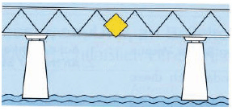
|
✓ Рекомендуемый пролёт, проход в обоих направлениях разрешён.
□ Рекомендуемый проход, проход во встречном направлении запрещён.
□ Проход разрешён только через этот пролёт моста и только в одном направлении.
□ Проход разрешён только через этот пролёт моста и в обоих направлениях.
|
| 111. Какое значение имеют следующие табличные знаки?
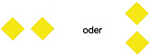
|
✓ Рекомендуемый проход, проход во встречном направлении запрещён.
□ Рекомендуемый пролёт, проход в обоих направлениях разрешён.
□ Проход разрешён только через этот пролёт моста и в обоих направлениях.
□ Проход разрешён только через этот пролёт моста и только в одном направлении.
|
| 112. Что означают эти табличные знаки на мостах?
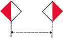
|
✓ Проход разрешён только между этими двумя щитами.
□ Проход разрешён только вне этих двух щитов.
□ Рекомендуемый проход только между этими двумя щитами.
□ Рекомендуемый проход со встречным движением.
|
| 113. Что означают эти табличные знаки на мостах?

|
✓ Рекомендуемый проход только между этими двумя щитами.
□ Проход разрешён только между этими двумя щитами.
□ Проход разрешён только вне этих двух щитов.
□ Рекомендуемый проход со встречным движением.
|
| 114. Что означает этот табличный знак на мостах?
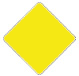
|
✓ Рекомендуемый проход со встречным движением.
□ Рекомендуемый проход без встречного движения.
□ Рекомендуемый проход только в одном направлении.
□ Проход разрешён только рядом со щитом.
|
| 115. Что означают эти табличные знаки на мостах?
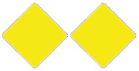
|
✓ Рекомендуемый проход без встречного движения.
□ Рекомендуемый проход со встречным движением.
□ Рекомендуемый проход в обоих направлениях.
□ Проход разрешён только вне этих двух щитов.
|
| 116. Что означает этот табличный знак в районе плотины?

|
✓ Запрещение прохода и закрытие судоходства.
□ Закрытая водная поверхность, однако проходима для маломерных судов с механическим двигателем.
□ Закрытая водная поверхность, однако проходима для маломерных судов без механического двигателя.
□ Защищаемый объект.
|
| 117. Какое значение имеют красный или красный и зелёный огонь перед шлюзом? |
✓ Вход запрещён, подготовка к открытию шлюза.
□ Вход запрещён, подготовка к закрытию шлюза.
□ Выход запрещён, подготовка к открытию шлюза.
□ Выход запрещён, подготовка к закрытию шлюза.
|
| 118. В какой последовательности входят в шлюз суда, не являющиеся маломерными, и маломерные суда, которые должны шлюзоваться совместно? |
✓ Маломерные суда входят после судов, не являющихся маломерными, и по указанию службы шлюза.
□ Маломерные суда входят перед судами, не являющимися маломерными, и до указания службы шлюза.
□ Маломерные суда входят перед судами, не являющимися маломерными, и без указания службы шлюза.
□ Маломерные суда входят после судов, не являющихся маломерными, и без указания службы шлюза.
|
| 119. Несколько маломерных судов должны совместно шлюзоваться из верхнего бьефа в нижний. На что особенно обращать внимание при входе в шлюз и во время шлюзования? |
✓ Последнее маломерное судно должно войти достаточно далеко, чтобы не сесть на порог при опорожнении шлюза. Швартовные концы должны управляться так, чтобы избежать ударов о стены шлюза, ворота, другие суда и было возможно безопасное травление концов.
□ Первое маломерное судно должно войти достаточно далеко, чтобы не сесть на порог при опорожнении шлюза...
□ Первое маломерное судно должно войти достаточно далеко, чтобы не сесть на порог при наполнении шлюза...
□ Последнее маломерное судно должно войти достаточно далеко, чтобы не сесть на порог при наполнении шлюза...
|
| 120. Что означают эти огни?
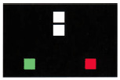
|
✓ Судно с механическим двигателем длиной более 110 м.
□ Толкаемый состав длиной менее 110 м.
□ Толкаемый состав длиной более 110 м.
□ Судно без механического двигателя длиной более 110 м.
|
| 121. Что означает этот дневной знак?
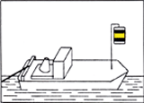
|
✓ Буксирное судно во главе буксирного состава.
□ Судно, стоящее на якоре.
□ Суда, имеющие приоритет у шлюза.
□ Судно буксирного состава.
|
| 122. Что означает этот дневной знак?
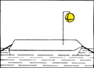
|
✓ Судно буксирного состава.
□ Судно, стоящее на якоре.
□ Суда, имеющие приоритет у шлюза.
□ Буксирное судно во главе буксирного состава.
|
| 123. Что означают эти огни?
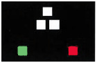
|
✓ Толкаемый состав на ходу (вид спереди).
□ Толкаемый состав на ходу (вид с кормы).
□ Толкаемый состав, стоящий на якоре.
□ Толкаемый состав длиной менее 110 м.
|
| 124. Что означают эти огни?
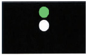 |
✓ Не свободно идущий паром.
□ Свободно идущий паром.
□ Толкаемый состав (вид с кормы).
□ Толкаемый состав с правого борта.
|
| 125. Что означают эти огни?
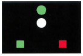 |
✓ Свободно идущий паром.
□ Не свободно идущий паром.
□ Толкаемый состав (вид с кормы).
□ Толкаемый состав с правого борта.
|
| 126. Что означает синий огонь на судне? |
✓ Судно загружено горючими веществами. Расстояние при стоянке 10 м.
□ Судно загружено веществами, опасными для здоровья. Расстояние при стоянке 50 м.
□ Судно загружено взрывчатыми веществами. Расстояние при стоянке 100 м.
□ Судно надзорных органов в действии.
|
| 127. Что означает этот дневной знак?
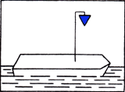 |
✓ Судно загружено горючими веществами, расстояние при стоянке 10 м.
□ Судно загружено веществами, опасными для здоровья, расстояние при стоянке 50 м.
□ Судно загружено взрывчатыми веществами, расстояние при стоянке 100 м.
□ Судно надзорных органов в действии.
|
| 128. Что означают два синих огня один над другим на судне? |
✓ Судно загружено веществами, опасными для здоровья. Расстояние при стоянке 50 м.
□ Судно загружено взрывчатыми веществами. Расстояние при стоянке 100 м.
□ Судно загружено горючими веществами. Расстояние при стоянке 10 м.
□ Судно надзорных органов в действии.
|
| 129. Что означает этот дневной знак?
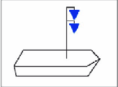 |
✓ Судно загружено веществами, опасными для здоровья. Расстояние при стоянке 50 м.
□ Судно загружено взрывчатыми веществами. Расстояние при стоянке 100 м.
□ Судно загружено горючими веществами. Расстояние при стоянке 10 м.
□ Судно надзорных органов в действии.
|
| 130. Что означают три синих огня один над другим на судне? |
✓ Судно загружено взрывчатыми веществами. Расстояние при стоянке 100 м.
□ Судно загружено веществами, опасными для здоровья. Расстояние при стоянке 50 м.
□ Судно загружено горючими веществами. Расстояние при стоянке 10 м.
□ Судно надзорных органов в действии.
|
| 131. Что означает этот дневной знак?
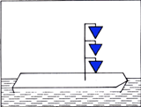 |
✓ Судно загружено взрывчатыми веществами. Расстояние при стоянке 100 м.
□ Судно загружено веществами, опасными для здоровья. Расстояние при стоянке 50 м.
□ Судно загружено горючими веществами. Расстояние при стоянке 10 м.
□ Судно надзорных органов в действии.
|
| 132. Какое судно несёт следующий дневной знак?
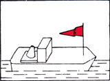 |
✓ Судно, которому компетентный орган предоставил приоритет прохождения в местах с установленной очередностью.
□ Судно длиной менее 20 м, допущенное к перевозке более 12 пассажиров.
□ Буксируемое судно буксирного состава.
□ Севшее на мель судно, непроходимое с одной стороны.
|
| 133. Малое судно под парусом ночью идёт по внутреннему водному пути и несёт белый круговой огонь на топе. Как целесообразно использовать белый ручной фонарь, который необходимо показывать при приближении других судов? |
✓ Освещать собственные паруса.
□ Освещать воду.
□ Освещать приближающееся судно.
□ Держать фонарь вверх.
|
| 134. Малое судно под парусом ночью идёт по внутреннему водному пути и несёт белый круговой огонь на топе. Какие дополнительные огни необходимо включить, если запущен двигатель? |
✓ Бортовые огни непосредственно рядом или в одном фонаре.
□ Необходимо нести белый проблесковый огонь.
□ Дополнительных огней не требуется.
□ Необходимо нести второе белое топовое освещение.
|
| 135. Какие огни должно нести малое судно с механическим двигателем, если оно буксирует другое малое судно без механического двигателя? |
✓ Огни малого судна с механическим двигателем.
□ Два белых огня один над другим.
□ Белый круговой огонь.
□ Огни малого судна с механическим двигателем и второе белое топовое освещение.
|
| 136. Какие огни должно нести буксируемое малое судно? |
✓ Белый круговой огонь.
□ Огни малого судна с механическим двигателем.
□ Два белых огня один над другим.
□ Белый проблесковый огонь.
|
| 137. Когда спортивное судно на внутренних водных путях перестаёт считаться маломерным судном? |
✓ Когда оно имеет длину 20 м или более.
□ Когда оно имеет длину 15 м или более.
□ Когда оно имеет длину 10 м или более.
□ Когда оно имеет длину 18 м или более.
|
| 138. Какой угол видимости и какие цвета имеют предписанные огни на борту? |
✓ Топовый огонь: белый 225°, кормовой огонь 135° белый, бортовые огни: левый борт красный и правый борт зелёный, каждый 112,5°.
□ Топовый огонь: белый 135°, кормовой огонь: белый 225°, бортовые огни: левый борт красный и правый борт зелёный, каждый 112,5
□ Топовый огонь: белый 225°, кормовой огонь: белый 112,5°, бортовые огни: левый борт красный и правый борт зелёный, каждый 135
□ Топовый огонь: белый 112,5°, кормовой огонь: белый 225°, бортовые огни: левый борт красный и правый борт зелёный, каждый 112,5
|
| 139. Какой огонь должен нести как минимум малое судно без механического двигателя? |
✓ Круговой белый огонь, видимый со всех сторон.
□ Трёхцветный фонарь на топе.
□ Бортовые огни.
□ Топовый и кормовой огонь.
|
| 140. Как должно вести себя парусное судно на внутреннем водном пути, которое находится на курсе столкновения с малым судном с механическим двигателем? |
✓ Оно держит курс и скорость.
□ Оно меняет курс вправо и снижает скорость.
□ Оно держит курс и снижает скорость.
□ Оно меняет курс вправо и держит скорость.
|
| 141. Как должно вести себя судно с топовым и бортовыми огнями по отношению к маломерному судну с бортовыми огнями, находящемуся на курсе столкновения? |
✓ Оно сохраняет курс и скорость.
□ Оно меняет курс на правый борт и снижает скорость.
□ Оно сохраняет курс и снижает скорость.
□ Оно должно уступить дорогу.
|
| 142. Как должно вести себя малое судно с механическим двигателем по отношению к виндсёрферу, находящемуся на курсе столкновения? |
✓ Оно должно уступить дорогу.
□ Оно держит курс и скорость.
□ Оно держит курс и снижает скорость.
□ Оно не должно уступать дорогу.
|
| 143. Кто обязан уступить дорогу, если парусное судно, идущее под ветром с левого борта, встречается на курсе столкновения с парусной яхтой, идущей под ветром с правого борта и несущей черный конус? |
✓ Парусная яхта с ветром с правого борта, потому что из-за конуса она считается маломерным судном с двигателем.
□ Парусная яхта с ветром с левого борта, так как она считается маломерным судном под парусом.
□ Парусная яхта с ветром с правого борта, так как она считается маломерным судном под парусом.
□ Обе яхты, так как одна считается судном с двигателем, а у другой ветер с левого борта.
|
| 144. Каково одно из трех основных правил расхождения парусных маломерных судов? |
✓ Если ветер у них с разных сторон, судно, идущее галсом левого борта (ветер слева), должно уступить дорогу судну, идущему галсом правого борта (ветер справа).
□ Если ветер у них с разных сторон, судно галса правого борта должно уступить дорогу судну галса левого борта.
□ Если ветер с одной стороны, подветренное судно должно уступить дорогу наветренному.
□ Если ветер с одной стороны, оба судна должны уступить дорогу.
|
| 145. Что означают эти огни?
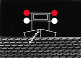
|
✓ Плавучая установка (снаряд) во время работы. Проход разрешен с любой стороны. Избегать чрезмерного волнения.
□ Плавучая установка во время работы. Проход не разрешен.
□ Судно на мели или затонувшее. Проход разрешен по правому борту. Избегать волнения.
□ Судно на мели или затонувшее. Проход не разрешен.
|
| 146. Что означают эти дневные знаки?
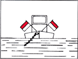
|
✓ Плавучая установка (снаряд) во время работы. Проход разрешен с любой стороны. Избегать чрезмерного волнения.
□ Плавучая установка во время работы. Проход не разрешен.
□ Судно на мели или затонувшее. Проход разрешен по правому борту. Избегать волнения.
□ Судно на мели или затонувшее. Проход не разрешен.
|
| 147. Что означают эти огни? 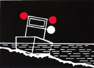 |
✓ Судно на мели или затонувшее. Проход разрешен со стороны красно-белого знака; красная сторона закрыта. Избегать волнения.
□ Судно на мели... проход разрешен со стороны красно-белого знака... без снижения скорости.
□ Судно на мели... проход разрешен с красной стороны; красно-белая сторона закрыта... без снижения скорости.
□ Судно на мели... проход разрешен с красной стороны; красно-белая сторона закрыта. Избегать волнения.
|
| 148. Что означают эти дневные знаки?
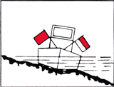
|
✓ Судно на мели или затонувшее. Проход разрешен со стороны красно-белого знака; красная сторона закрыта. Избегать волнения.
□ Судно на мели... красно-белая сторона разрешена... без снижения скорости.
□ Судно на мели... красная сторона разрешена... без снижения скорости.
□ Судно на мели... красная сторона разрешена; избегать волнения.
|
| 149. Что означают эти огни? 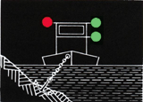 |
□ Плавучая установка во время работы. Проход разрешен с зеленой стороны; красная сторона закрыта.
✓ Плавучая установка во время работы. Проход разрешен с зеленой стороны; красная сторона закрыта. Избегать волнения.
□ Плавучая установка... зеленая сторона разрешена... без снижения скорости.
□ Плавучая установка... красная сторона разрешена; зеленая закрыта.
|
| 150. Что означают эти дневные знаки? 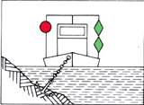 |
□ Плавучая установка во время работы. Проход разрешен с зеленой стороны; красная сторона закрыта.
✓ Плавучая установка во время работы. Проход разрешен с зеленой стороны; красная сторона закрыта. Избегать волнения.
□ Плавучая установка... зеленая сторона разрешена... без снижения скорости.
□ Плавучая установка... красная сторона разрешена; зеленая закрыта.
|
| 151. Что означают в русле реки следующие знаки? 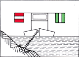 |
□ Плавучая установка во время работы. Проход разрешен со стороны зелено-бело-зеленого щита; красно-бело-красная сторона закрыта.
□ Судно на мели... зелено-бело-зеленая сторона разрешена... избегать волнения.
✓ Плавучая установка во время работы. Проход разрешен со стороны зелено-бело-зеленого щита; красно-бело-красная сторона закрыта. Избегать волнения.
□ Судно на мели... красно-бело-красная сторона разрешена...
|
| 152. Что означают эти огни? 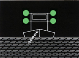 |
✓ Плавучая установка (снаряд) во время работы. Проход разрешен с любой стороны.
□ Плавучая установка во время работы. Проход не разрешен.
□ Судно на мели или затонувшее. Проход разрешен по правому борту.
□ Судно на мели или затонувшее. Проход не разрешен.
|
| 153. Что означают эти дневные знаки? 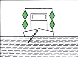 |
✓ Плавучая установка (снаряд) во время работы. Проход разрешен с любой стороны.
□ Плавучая установка во время работы. Проход не разрешен.
□ Судно на мели или затонувшее. Проход разрешен по правому борту.
□ Судно на мели или затонувшее. Проход не разрешен.
|
| 154. Что означают эти дневные знаки? 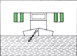 |
□ Плавучая установка во время работы. Проход разрешен с любой стороны.
□ Плавучая установка во время работы. Проход не разрешен.
✓ Судно на мели или затонувшее. Проход разрешен по правому борту. Избегать волнения.
□ Судно на мели или затонувшее. Проход не разрешен.
|
| 155. Что означает это дневное и ночное обозначение?
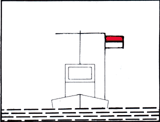 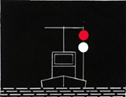 |
✓ Судно, требующее защиты, проходить на максимально возможном расстоянии, снизить скорость, избегать волнения.
□ Судно на мели или затонувшее. Проход не разрешен.
□ Судно на мели... проход разрешен с любой стороны без снижения скорости.
□ Плавучая установка / плавсредство. Проходить на максимально возможном расстоянии...
|
| 156. Что означает этот береговой знак? |
✓ Закрытая акватория, однако проходима для маломерных судов без двигателя.
□ Закрытая акватория, однако проходима для маломерных судов с неработающим двигателем.
□ Закрытая акватория, не проходима для маломерных судов.
□ Закрытая акватория, запрет прохода и закрытие судоходства.
|
| 157. Что означает этот береговой знак? |
□ Запрет движения для судов с механическим двигателем.
✓ Запрет движения для маломерных судов с механическим двигателем.
□ Запрет движения для судов без механического двигателя.
□ Запрет движения для маломерных судов с неработающим двигателем.
|
| 158. Как обозначается защищенная зона для купания? |
✓ Желтыми буями.
□ Зелеными буями.
□ Красными буями.
□ Красно-зелеными полосатыми буями.
|
| 159. Что означает один длинный звук? |
✓ Внимание!
□ Мои машины работают на задний ход.
□ Судно потеряло управляемость.
□ Обгон невозможен.
|
| 160. Что означают четыре коротких звука? |
✓ Судно потеряло управляемость.
□ Мои машины работают на задний ход.
□ Внимание!
□ Обгон невозможен.
|
| 161. Что означают пять коротких звуков? |
✓ Обгон невозможен.
□ Мои машины работают на задний ход.
□ Судно потеряло управляемость.
□ Внимание!
|
| 162. Что означает этот звуковой сигнал? 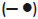 |
✓ Поворот направо (через правый борт).
□ Изменение курса вправо.
□ Изменение курса влево.
□ Поворот налево.
|
| 163. Что означает этот звуковой сигнал? 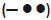 |
✓ Поворот налево (через левый борт).
□ Поворот направо.
□ Изменение курса влево.
□ Изменение курса вправо.
|
| 164. Что означает этот звуковой сигнал? 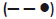 |
✓ Обгон по правому борту обгоняемого судна.
□ Обгон по левому борту обгоняемого судна.
□ Порт или приток; вход или выход с поворотом на правый борт.
□ Порт или приток; вход или выход с поворотом на левый борт.
|
| 165. Что означает этот звуковой сигнал? 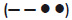 |
✓ Обгон по левому борту обгоняемого судна.
□ Обгон по правому борту обгоняемого судна.
□ Порт или приток; вход или выход с поворотом на правый борт.
□ Порт или приток; вход или выход с поворотом на левый борт.
|
| 166. Что означает этот звуковой сигнал? 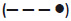 |
✓ Порт или приток; вход или выход с поворотом на правый борт.
□ Обгон по левому борту обгоняемого судна.
□ Обгон по правому борту обгоняемого судна.
□ Порт или приток; вход или выход с поворотом на левый борт.
|
| 167. Что означает этот звуковой сигнал? 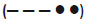 |
✓ Порт или приток; вход или выход с поворотом на левый борт.
□ Обгон по левому борту обгоняемого судна.
□ Порт или приток; вход или выход с поворотом на правый борт.
□ Обгон по правому борту обгоняемого судна.
|
| 168. Что такое серия очень коротких звуков? |
✓ Серия не менее чем из 6 звуков, каждый продолжительностью около 1/4 секунды, с паузами такой же продолжительности.
□ Серия не менее чем из 4 звуков, каждый продолжительностью около 1/4 секунды, с паузами такой же продолжительности.
□ Серия не менее чем из 2 звуков, каждый продолжительностью около 1/4 секунды, с паузами такой же продолжительности.
□ Серия не менее чем из 8 звуков, каждый продолжительностью около 1/4 секунды, с паузами такой же продолжительности.
|
| 169. Что означает серия очень коротких звуков? |
✓ Существует опасность столкновения.
□ Внимание!
□ Судно потеряло управляемость.
□ Обгон невозможен.
|
| 170. Какие звуковые сигналы или знаки необходимо подавать, если судно потеряло управляемость? |
✓ Четыре коротких звука; днем — размахивание по кругу красным флагом, ночью — размахивание по кругу красным огнем.
□ Пять коротких звуков; днем — размахивание по кругу красным флагом, ночью — размахивание по кругу красным огнем.
□ Один длинный и четыре коротких звука; днем — размахивание по кругу красным флагом, ночью — размахивание по кругу красным огнем.
□ Серия коротких и длинных звуков; днем — размахивание по кругу красным флагом, ночью — размахивание по кругу красным огнем.
|
| 171. Судно показывает на правой стороне своей рубки синий щит с белым мигающим светом. Какое значение имеет этот знак? |
✓ Расхождение правыми бортами; этот знак не относится к маломерным судам, но обязывает их водителей проявлять повышенное внимание.
□ Расхождение левыми бортами; этот знак относится также и к маломерным судам.
□ Обгон по правому борту; этот знак не относится к маломерным судам.
□ Расхождение правыми бортами; этот знак относится ко всем судам.
|
| 172. Спортивное судно заходит в аванпорт вслед за судном, не являющимся маломерным. Из шлюза выходит встречное судно, показывающее на своей правой стороне синий щит с белым мигающим светом. Что это означает? |
✓ Встречное судно и заходящее судно (не являющееся маломерным) расходятся правыми бортами; водитель спортивного судна должен лишь проявлять повышенное внимание.
□ Встречное судно и заходящее судно (не являющееся маломерным) расходятся левыми бортами; спортивное судно должно уступить дорогу.
□ Встречное судно имеет преимущество в движении; спортивное судно должно остановиться.
□ Встречное судно просит его обогнать; спортивному судну разрешено проходить.
|
| 173. Где можно узнать об установленных максимальных скоростях на внутренних водных путях? |
✓ В Правилах судоходства по внутренним водным путям, в Управлении водных путей и судоходства и в водной полиции.
□ В Правилах технического освидетельствования судов внутреннего плавания, в Управлении водных путей и судоходства и в водной полиции.
□ В Положении о правах на управление маломерными судами, в Управлении водных путей и судоходства и в водной полиции.
□ В Положении о патентах судоводителей внутреннего плавания, в Управлении водных путей и судоходства и в водной полиции.
|
| 174. Как следует выполнять манёвр обгона? |
✓ Обгонять энергично. Не создавать помех участвующим судам. Соблюдать навигационную обстановку и возможные звуковые сигналы. Выдерживать достаточное расстояние.
□ Обгонять энергично. При необходимости резко увеличить скорость судна, чтобы быстро миновать обгоняемое судно.
□ Обгонять энергично; обгон разрешён только по правому борту, выдерживать достаточное расстояние.
□ Обгонять энергично. Держаться вплотную к берегу, возможные звуковые сигналы должны соблюдаться маломерными судами.
|
| 175. Когда возникает опасность столкновения? |
✓ Когда два судна сближаются при неизменном пеленге.
□ Когда два судна сближаются и курс судов не изменяется.
□ Когда два судна сближаются и курс одного из судов изменяется.
□ Когда два судна сближаются и оба судна изменяют курс на правый борт.
|
| 176. Как должны выполняться манёвры расхождения? |
✓ Заблаговременно, чётко и решительно.
□ Заблаговременно, чётко и в сторону правого борта.
□ Заблаговременно, чётко и в сторону левого борта.
□ Заблаговременно, чётко и осторожно.
|
| 177. Маломерное судно и судно длиной более 20 м сближаются на пересекающихся курсах. Возникает опасность столкновения. Кто обязан уступить дорогу? |
✓ Обязано уступить дорогу маломерное судно.
□ Обязано уступить дорогу судно длиной более 20 м.
□ Обязано уступить дорогу судно, которое видит другое с правого борта.
□ Обязано уступить дорогу судно, которое видит другое с левого борта.
|
| 178. Какие суда на ходу несут ночью только один белый круговой огонь? |
✓ Буксируемые или счаленные борт о борт маломерные суда.
□ Маломерные суда с механическим двигателем длиной менее 20 м.
□ Маломерные суда с механическим двигателем и буксируемые суда.
□ Суда, которые толкают.
|
| 179. Как должно вести себя пересекающее курс маломерное судно под парусом, идущее круто к ветру вблизи берега, по отношению к другому маломерному судну? |
✓ Оно не должно вынуждать другое маломерное судно, следующее вдоль своего берега по правому борту, уклоняться с курса.
□ Оно не должно вынуждать другое маломерное судно, отходящее от своего берега по правому борту, уклоняться с курса.
□ Оно может вынуждать другое маломерное судно, отходящее от своего берега по левому борту, уклоняться с курса.
□ Оно может вынуждать другое маломерное судно, следующее вдоль своего берега по правому борту, уклоняться с курса.
|
| 180. Кто обязан уступить дорогу, а кто — нет? 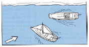 |
✓ Парусное судно обязано уступить дорогу.
□ Парусное судно не обязано уступить дорогу.
□ Судно с механическим двигателем обязано уступить дорогу.
□ Оба судна обязаны уступить дорогу.
|
| 181. Что должен соблюдать судоводитель маломерного судна при расхождении с судами, не являющимися маломерными? |
✓ Маломерные суда обязаны уступать дорогу судам, не являющимся маломерными. Они должны оставлять им место для следования по курсу и для манёвров.
□ Маломерные суда не обязаны уступать дорогу другим судам, не являющимся маломерными.
□ Маломерные суда при расхождении с судами, не являющимися маломерными, имеют равные права.
□ Маломерные суда обязаны уступать дорогу судам, не являющимся маломерными, однако не обязаны оставлять особого места для манёвров.
|
| 182. Судно под парусом с чёрным конусом, вершиной вниз, пересекает курс судна с механическим двигателем, приближаясь с левого борта. Кто обязан уступить дорогу? |
✓ Судно под парусом с чёрным конусом обязано уступить дорогу.
□ Судно без паруса обязано уступить дорогу.
□ Судно под парусом с чёрным конусом не обязано уступать дорогу.
□ Оба судна обязаны уступить дорогу.
|
| 183. Два маломерных судна под парусом А и В идут на курсе столкновения; А несёт чёрный конус. Кто обязан уступить дорогу? 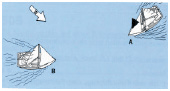 |
✓ Судно А обязано уступить дорогу.
□ Судно В обязано уступить дорогу.
□ Обязано уступить дорогу то судно, которое видит другое с левого борта.
□ Обязано уступить дорогу то судно, у которого ветер с левого борта.
|
| 184. Судно под парусом пересекает внутренний водный путь. В середине фарватера навстречу идёт вверх маломерное судно с механическим двигателем. Кто обязан уступить дорогу? |
✓ Судно с механическим двигателем.
□ Судно, следующее вниз по течению.
□ Судно под парусом.
□ Оба обязаны уступить дорогу.
|
| 185. Два маломерных судна А и В под парусом идут на курсе столкновения (схема). Кто обязан уступить дорогу? 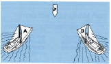 |
✓ А обязано уступить дорогу. Парусные суда с ветром с левого борта должны уступать дорогу парусным судам с ветром с правого борта.
□ В обязано уступить дорогу. Парусные суда с ветром с левого борта должны уступать дорогу парусным судам с ветром с правого борта.
□ А обязано уступить дорогу. Парусные суда с ветром с правого борта должны уступать дорогу парусным судам с ветром с левого борта.
□ В обязано уступить дорогу. Парусные суда с ветром с правого борта должны уступать дорогу парусным судам с ветром с левого борта.
|
| 186. Два маломерных судна под парусом идут на курсе столкновения. Кто обязан уступить дорогу? 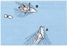 |
✓ В обязано уступить дорогу. Судно на наветренной стороне должно уступать дорогу судну на подветренной стороне.
□ А обязано уступить дорогу. Судно на наветренной стороне должно уступать дорогу судну на подветренной стороне.
□ А обязано уступить дорогу. Судно на подветренной стороне должно уступать дорогу судну на наветренной стороне.
□ В обязано уступить дорогу. Судно на подветренной стороне должно уступать дорогу судну на наветренной стороне.
|
| 187. Маломерное судно А идёт ночью под парусом полным ветром вниз по течению, грот на правом борту. С левого борта по траверзу всё ближе приближается зелёный бортовой огонь судна В, которое не несёт топового огня. Кто обязан уступить дорогу? |
✓ Маломерное судно А обязано уступить дорогу. Судно с ветром с левого борта обязано уступить дорогу, если не может точно определить, несёт ли наветренное судно ветер с правого борта.
□ Маломерное судно А обязано уступить дорогу. Судно с ветром с правого борта обязано уступить дорогу, если не может точно определить, несёт ли наветренное судно ветер с левого борта.
□ Судно В обязано уступить дорогу, поскольку судно А является маломерным парусным судном с ветром с левого борта.
□ Судно В обязано уступить дорогу, поскольку является маломерным судном, а маломерные суда должны уступать дорогу другим маломерным парусным судам.
|
| 188. Боковое расстояние между судами А, В и С постоянно уменьшается. Какое судно может сохранять курс? 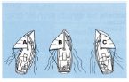 |
✓ Судно А, так как оно на подветренной стороне.
□ Судно А, так как оно на наветренной стороне.
□ Судно В, так как оно на подветренной стороне.
□ Судно С, так как оно на подветренной стороне.
|
| 189. Кто обязан держать курс по отношению к кому? 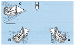 |
✓ А по отношению к В и С, В по отношению к С.
□ С по отношению к А и В, В по отношению к А.
□ В по отношению к С и А, А по отношению к С.
□ А по отношению к В и С, С по отношению к В.
|
| 190. Что в первую очередь необходимо предпринять, если шлюпка перевернулась и её не удаётся поставить на ровный киль? |
✓ Проверить наличие всех членов экипажа, при необходимости оказать помощь. Держаться за судно или при возможности взобраться на него, ожидать помощи.
□ Немедленно подать предписанные сигналы бедствия, всеми средствами стараться вывести судно из фарватера.
□ Взобраться на перевёрнутое судно и сохранять спокойствие, чтобы минимизировать теплопотери. Если это невозможно — плыть к ближайшему берегу и звать помощь.
□ Надеть спасательные жилеты и подходящими средствами вызвать помощь. При необходимости убрать паруса.
|
| 191. Парусное судно попадает в акваторию парусной регаты, не являясь её участником. Какие правила расхождения необходимо соблюдать? |
✓ Правила судоходства по внутренним водным путям.
□ Правила гонок.
□ По отношению к участникам регаты — правила гонок, по отношению к другим судам — правила судоходства по внутренним водным путям.
□ Суда, участвующие в регате, обязаны уступать дорогу посторонним судам.
|
| 192. Маломерное судно под парусом ночью пересекает фарватер. С левого борта появляются огни судна, которое намерено пересечь курс маломерного парусного судна под острым углом. Что означают эти огни? 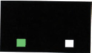 |
✓ Маломерное судно с механическим двигателем.
□ Свободно движущийся паром.
□ Толкаемый состав спереди.
□ Буксируемое маломерное судно.
|
| 193. Маломерное судно под парусом ночью пересекает фарватер. С левого борта появляются огни судна, которое намерено пересечь курс маломерного парусного судна под острым углом. Кто обязан уступить дорогу? |
✓ Маломерное судно с механическим двигателем.
□ Маломерное судно под парусом.
□ То маломерное судно, у которого другое находится с левого борта.
□ Оба обязаны уступить дорогу.
|
| 194. Маломерное судно под парусом и с механическим двигателем ночью следует вверх по течению. Навстречу идёт судно, несущее только один белый огонь. Что означает этот огонь? |
✓ Маломерное судно без механического двигателя.
□ Маломерное судно с механическим двигателем.
□ Маломерное судно под парусом.
□ Маломерное судно под парусом с механическим двигателем.
|
| 195. Маломерное судно под парусом ночью пересекает фарватер. Сзади догоняет судно, несущее двухцветный фонарь и топовый огонь. Что означают эти огни? |
✓ Маломерное судно с механическим двигателем.
□ Маломерное судно без механического двигателя.
□ Маломерное судно под парусом.
□ Маломерное судно под парусом с механическим двигателем.
|
| 196. Что означают следующие огни ночью на внутреннем водном пути? 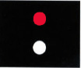 |
✓ Избегать засасывания и волнения.
□ Проход для маломерных судов запрещён.
□ Судоходство закрыто.
□ Проход для маломерных судов разрешён.
|
| 197. Где необходимо снижать скорость во избежание засасывания и волнения? |
✓ Перед входами в порты, у погрузочных, разгрузочных и стояночных мест, вблизи несвободно движущихся паромов, на обозначенных участках, вблизи плавучих механизмов при работе.
□ Перед впадениями притоков, у погрузочных, разгрузочных и стояночных мест, вблизи несвободно движущихся паромов, на обозначенных участках, вблизи плавучих механизмов при работе.
□ Перед входами в порты, у погрузочных, разгрузочных и стояночных мест, вблизи свободно движущихся паромов, на обозначенных участках, вблизи плавучих механизмов при работе.
□ Перед входами в порты, у погрузочных, разгрузочных и стояночных мест, вблизи несвободно движущихся паромов, на обозначенных участках, вблизи плавучих навигационных знаков.
|
| 198. Что означает этот знак? 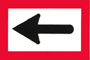 |
✓ Предписанное направление движения.
□ Движение влево запрещено.
□ Предписанное направление движения только для маломерных судов.
□ Рекомендуемое направление движения.
|
| 199. Какое значение имеет следующий знак при горящем красном огне? 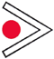 |
✓ Запрет входа в порт или приток.
□ Запрет обгона на данном участке.
□ Внимание: двойной шлюз, левая камера закрыта.
□ Внимание: выход из порта или бокового фарватера.
|
| 200. Что означает этот знак? 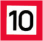 |
✓ Максимальная скорость 10 км/ч относительно берега.
□ Максимальная скорость 10 км/ч относительно течения.
□ Максимальная скорость 10 км/ч для маломерных судов.
□ 10 км/ч для крупных судов.
|
| 201. Что означает этот знак? |
✓ Предписание: соблюдать особую осторожность.
□ Предписание: следовать прямо.
□ Предписание: подать предупредительный сигнал.
□ Предписание: остановиться перед знаком.
|
| 202. Что означает этот знак? |
✓ Разворот запрещён.
□ Запрещённое направление движения вправо или влево.
□ Запрет движения в обоих указанных направлениях.
□ Разворот запрещён в середине фарватера.
|
| 203. Что означает этот знак? |
✓ Рекомендуемое место разворота. Стоянка для всех судов запрещена.
□ Рекомендуемое место разворота. Стоянка маломерных судов разрешена.
□ Предписанное место разворота. Стоянка для всех судов запрещена.
□ Предписанное место разворота. Стоянка маломерных судов разрешена.
|
| 204. Что означает этот знак? |
✓ Плотина.
□ Разводной мост.
□ Шлюз.
□ Защитные ворота.
|
| 205. Какие нарушения видимости приводят к условиям ограниченной видимости? |
✓ Туман, снегопад, сильный дождь.
□ Темнота, туман, снегопад, сильный дождь.
□ Ночь, снегопад, сильный дождь.
□ Сумерки, туман, снегопад, сильный дождь.
|
| 206. Каким оборудованием должно располагать судно для плавания в условиях ограниченной видимости? |
✓ Исправной радиолокационной установкой, допущенной для внутреннего судоходства, и УКВ-радиостанцией для внутреннего судоходства.
□ Исправной радиолокационной установкой, допущенной для внутреннего судоходства, и УКВ-радиостанцией без ATIS.
□ Исправной радиолокационной установкой, допущенной для внутреннего судоходства, и УКВ-радиостанцией морской связи.
□ Радиолокационной установкой без указателя поворота и УКВ-радиостанцией для внутреннего судоходства.
|
| 207. Что необходимо предпринять, если в ходе плавания наступают условия ограниченной видимости? |
✓ На определённых водных путях без радара и УКВ-радиостанции движение необходимо незамедлительно прекратить.
□ На всех водных путях без радара и УКВ-радиостанции движение необходимо незамедлительно прекратить.
□ На определённых водных путях без радара и AIS движение необходимо незамедлительно прекратить.
□ На всех водных путях без радара и ECDIS движение необходимо незамедлительно прекратить.
|
| 208. Какое преимущество даёт радиолокационный отражатель на маломерном судне? |
✓ Лучшая обнаруживаемость маломерного судна на экранах радиолокаторов.
□ Лучшая обнаруживаемость маломерного судна ночью.
□ Лучшая обнаруживаемость маломерного судна при дневном свете.
□ Лучшая обнаруживаемость маломерного судна в условиях ограниченной видимости.
|
| 209. Какое техническое устройство защиты от поражения электрическим током должно быть обязательно установлено в системе берегового электроснабжения? |
✓ Устройство защитного отключения (УЗО).
□ Небольшой зарядный ток не опасен.
□ Защита от перенапряжения.
□ Выключатель защитного сверхнизкого напряжения.
|
| 210. Какой звуковой сигнал подаётся в аварийной ситуации при необходимости помощи? |
✓ Повторяющиеся длинные тоны или группы ударов в колокол.
□ Повторяющиеся короткие тоны, удары в колокол не применяются.
□ Один длинный тон, отдельные удары в колокол.
□ Три коротких тона, удары в колокол не применяются.
|
| 211. Какое значение имеет круговое вращение красного флага на плавучем средстве днём? |
✓ Судно, терпящее бедствие, вызывает помощь визуальными сигналами.
□ Судно с ограниченной манёвренностью, вызывающее помощь визуальными сигналами.
□ Не имеет значения для сквозного судоходства.
□ Охраняемое судно, избегать засасывания и волнения.
|
| 212. Какие сигналы бедствия может подавать виндсёрфер на внутренних водных путях? |
✓ Круговое вращение руками или каким-либо предметом.
□ Круговое вращение зелёным флагом, который нельзя спутать с другими знаками.
□ Повторяющиеся длинные группы ударов в колокол.
□ Круговое вращение руками следует избегать; парус по возможности устанавливается вертикально.
|
| 213. Что необходимо делать с отходами любого рода, образующимися на борту? |
✓ Собирать на борту и сдавать на берегу в соответствующие мусорные контейнеры экологически безопасным способом.
□ Собирать на борту и выставлять на берегу у места стоянки.
□ Собирать на борту и выбрасывать за борт только в закрытых ёмкостях.
□ Собирать на борту. Сдача возможна у любого шлюза.
|
| 214. Кому судоводитель вправе передать управление рулём моторного маломерного судна? |
✓ Лицу не моложе 16 лет, физически и умственно пригодному.
□ Лицу не моложе 18 лет, физически и умственно пригодному.
□ Лицу не моложе 14 лет, физически и умственно пригодному.
□ Лицу любого возраста, физически и умственно пригодному.
|
| 215. Каким образом необходимо утилизировать отходы? |
✓ Никакие отходы не должны попадать в воду; фекалии и масла подлежат утилизации на берегу.
□ Только отходы, не представляющие опасности для окружающей среды, допускается сбрасывать в воду на расстоянии 300 м от берега.
□ На озёрах никакие отходы не должны попадать в воду; для внутренних водных путей существуют специальные правила.
□ Все суда должны быть оснащены фекальными цистернами и иметь на борту подходящие ёмкости для раздельного сбора отходов.
|
| 216. Что необходимо учитывать при нанесении нового покрытия подводной части корпуса и при удалении старого покрытия? |
✓ Рабочая зона должна быть тщательно укрыта, а образующиеся отходы следует обращаться как со специальными отходами и утилизировать соответствующим образом.
□ Допускается использовать только подводные покрытия, экологическая совместимость которых подтверждена маркировкой ЕС.
□ При работе с подводными покрытиями необходимо соблюдать директивы комиссии по техническому освидетельствованию судов.
□ Подводные работы разрешается выполнять только сертифицированными специализированными предприятиями в соответствии с требованиями охраны окружающей среды.
|
| 217. Что должен предпринять судоводитель маломерного парусного судна на крупном водоёме при штормовом предупреждении? |
✓ Надеть спасательный жилет. Убрать паруса, попытаться зайти в порт или защищённую бухту.
□ Надеть спасательный жилет. Поставить все паруса, попытаться зайти в порт или защищённую бухту.
□ Держать спасательный жилет наготове. Убрать паруса, попытаться зайти в порт или защищённую бухту.
□ Надеть спасательный жилет. Поставить паруса, попытаться выйти на середину водоёма.
|
| 218. Какая сторона судового хода находится у судна, следующего вниз по течению, с левого борта? |
✓ Левая сторона судового хода, обозначенная зелёными конусными буями или вехами.
□ Правая сторона судового хода, обозначенная красными цилиндрическими буями или вехами.
□ Левая сторона судового хода, обозначенная красными цилиндрическими буями или вехами.
□ Правая сторона судового хода, обозначенная зелёными конусными буями или вехами.
|
| 219. Какое развитие погоды следует ожидать при быстром и устойчивом падении атмосферного давления? |
✓ Ухудшение погоды, сильный ветер или шторм.
□ Улучшение погоды, повышение температуры.
□ Ухудшения погоды не ожидается.
□ Улучшение погоды, солнце.
|
| 220. Какой погоды следует ожидать, если атмосферное давление медленно, но устойчиво растёт? |
✓ Улучшение погоды, солнце.
□ Улучшение погоды, повышение температуры.
□ Ухудшения погоды не ожидается.
□ Ухудшение погоды, сильный ветер или шторм.
|
| 221. Где на внутренних водных путях разрешено катание на водных лыжах? |
✓ Только в зонах, разрешённых соответствующими знаками.
□ За пределами фарватера.
□ За пределами судового хода.
□ Везде, не создавая угрозы для судоходства.
|
| 222. В какое время суток и при какой видимости разрешено катание на водных лыжах на разрешённых участках водоёма? |
✓ От восхода до захода солнца, видимость 1000 м и более.
□ От восхода до захода солнца, видимость 1500 м и более.
□ От восхода до захода солнца, видимость 500 м и более.
□ От восхода до захода солнца, видимость 300 м и более.
|
| 223. Как должен вести себя водный лыжник при прохождении мимо судов, плавучих объектов или купающихся? |
✓ Он должен оставаться в кильватерной струе буксирующего судна.
□ Он может отклоняться до 10 м в обе стороны за пределы кильватерной струи.
□ Он может отклоняться до 5 м в обе стороны за пределы кильватерной струи.
□ Он должен держаться со стороны берега относительно кильватерной струи.
|
| 224. При каких условиях разрешается движение на гидроцикле за пределами отведённых участков/акваторий? |
✓ При туристических и прогулочных поездках по прямому курсу.
□ При крупных специальных мероприятиях за пределами судового хода.
□ Если не создаются помехи другим участникам движения.
□ Начиная с отметки высокого паводка I — только в фарватере.
|
| 225. Как должен вести себя водитель гидроцикла за пределами отведённых участков/акваторий? |
✓ Следовать чётким прямым курсом.
□ Держаться на расстоянии 10 м от берега.
□ Держаться на расстоянии 10 м за пределами линии буёв.
□ Следовать по краю судового хода.
|
| 226. На каких водных объектах требуется разрешение на управление маломерным парусным судном? |
✓ На определённых водных путях в Берлине и Бранденбурге.
□ На всех водных объектах федеральных земель.
□ На внутренних водных путях и на всех водных объектах федеральных земель.
□ На всех немецких водных путях.
|
| 227. Почему судоводитель обязан ознакомиться с действующими правилами перед плаванием по незнакомым водам? |
✓ Чтобы соблюдать действующие в данном месте правила.
□ Поскольку на водных объектах федеральных земель они принципиально отличаются по содержанию.
□ Поскольку на федеральных водных путях они принципиально отличаются по содержанию.
□ Поскольку действующие правила содержат важные сведения о допустимой высоте прохождения под мостами.
|
| 228. Какой документ о профессиональной пригодности даёт право управлять маломерным судном длиной до 25 м на Рейне? |
✓ Спортивный патент.
□ Свидетельство спортивного судоводителя.
□ Судоводительский диплом маломерного судна с районом плавания по внутренним водным путям.
□ Судоводительский диплом маломерного судна с районом плавания по морским водным путям.
|
| 229. Какой документ о профессиональной пригодности даёт право управлять маломерным судном длиной от 20 м до 25 м на внутренних водных путях, за исключением Рейна? |
✓ Свидетельство спортивного судоводителя или спортивный патент.
□ Судоводительский диплом маломерного судна с районом плавания по внутренним водным путям.
□ Судоводительский диплом маломерного судна с районом плавания по морским водным путям.
□ Судоводительский диплом маломерного судна с районом плавания по внутренним водным путям для судов с двигателем или спортивный патент.
|
| 230. Где можно найти подробные сведения о внутренних водных путях и их границах? |
✓ В части II Правил судоходства по внутренним водным путям.
□ В части I Правил судоходства по внутренним водным путям.
□ В Правилах технического освидетельствования судов внутреннего плавания.
□ В Правилах маркировки маломерных судов.
|
| 231. Что необходимо учитывать при занятии водным спортом на водных объектах, не являющихся федеральными водными путями (например, водные пути федеральных земель, муниципальные и частные водоёмы)? |
✓ При необходимости следует получить разрешение владельца и соблюдать действующие правила пользования водоёмом.
□ Всегда следует получать разрешение владельца и соблюдать действующие правила пользования водоёмом.
□ Всегда следует получать разрешение Управления водных путей и судоходства и соблюдать действующие правила пользования водоёмом.
□ При необходимости следует получить разрешение владельца и соблюдать Правила судоходства по внутренним водным путям.
|
| 232. Какие виды маркировки маломерных судов существуют? |
✓ Официальные регистрационные знаки и официально признанные регистрационные знаки.
□ Только официальные регистрационные знаки.
□ Только официально признанные регистрационные знаки.
□ Знаки согласно декларации о соответствии (знак CE).
|
| 233. Какой орган уполномочен присваивать официальный регистрационный знак маломерному судну? |
✓ Любое Управление водных путей и судоходства.
□ Немецкий союз моторных яхт.
□ Немецкий парусный союз.
□ Общий немецкий автомобильный клуб.
|
| 234. Из чего состоят официально признанные регистрационные знаки? |
✓ Номер международного судового свидетельства, за которым следует буквенный код выдавшей организации.
□ Номер реестра судов внутреннего плавания, за которым следует буквенный код выдавшей организации.
□ Номер реестра морских судов, за которым следует буквенный код выдавшей организации.
□ Европейский идентификационный номер судна, за которым следует буквенный код выдавшей организации.
|
| 235. Какие организации уполномочены присваивать официально признанные регистрационные знаки маломерным судам? |
✓ Немецкий союз моторных яхт, Немецкий парусный союз, Общий немецкий автомобильный клуб.
□ Управления водных путей и судоходства.
□ Водная полиция.
□ Районные суды, при которых ведётся судовой реестр.
|
| 236. Когда водный спортивный объект подлежит внесению в реестр судов внутреннего плавания? |
✓ Начиная с 10 куб. м водоизмещения.
□ Начиная с 15 куб. м водоизмещения.
□ Начиная с длины судна 10 м.
□ Начиная с длины судна 15 м.
|
| 237. Как должен вести себя судоводитель при паводке? |
✓ Он должен снизить скорость и по возможности держаться середины фарватера, при необходимости соблюдать особые ограничения скорости и ограничения судоходства.
□ Он должен снизить скорость и по возможности держаться правой стороны по направлению движения, при необходимости соблюдать особые ограничения скорости и ограничения судоходства.
□ Он должен снизить скорость и по возможности держаться левой стороны по направлению движения, при необходимости соблюдать особые ограничения скорости и ограничения судоходства.
□ Он должен снизить скорость и по возможности держаться середины фарватера; особые ограничения скорости и ограничения судоходства соблюдать не требуется.
|
| 238. Как должен вести себя судоводитель при достижении отметки высокого паводка II? |
✓ Он обязан незамедлительно прекратить движение.
□ Он должен снизить скорость.
□ Он должен соблюдать запрет движения для судов без УКВ-радиостанции.
□ Он должен соблюдать запрет судоходства в ночное время.
|
| 239. Судно следует вниз по течению. Впереди находится красный буй. На какой стороне судового хода находится этот буй и с какого борта судна его необходимо обойти? |
✓ Он находится на правой стороне судового хода и его необходимо обойти с правого борта судна.
□ Он находится на правой стороне судового хода и его необходимо обойти с левого борта судна.
□ Он находится на левой стороне судового хода и его необходимо обойти с правого борта судна.
□ Он находится на левой стороне судового хода и его необходимо обойти с левого борта судна.
|
| 240. Судно следует вверх по течению. Впереди находится красный буй. На какой стороне судового хода находится этот буй и с какого борта судна его необходимо обойти? |
✓ Он находится на правой стороне судового хода и его необходимо обойти с левого борта судна.
□ Он находится на правой стороне судового хода и его необходимо обойти с правого борта судна.
□ Он находится на левой стороне судового хода и его необходимо обойти с левого борта судна.
□ Он находится на левой стороне судового хода и его необходимо обойти с правого борта судна.
|
| 241. Судно следует в судовом ходу против течения. Впереди находится зелёный буй. На какой стороне судового хода находится этот буй и с какого борта судна его необходимо обойти? |
✓ Он находится на левой стороне судового хода и его необходимо обойти с правого борта судна.
□ Он находится на правой стороне судового хода и его необходимо обойти с правого борта судна.
□ Он находится на левой стороне судового хода и его необходимо обойти с левого борта судна.
□ Он находится на правой стороне судового хода и его необходимо обойти с левого борта судна.
|
| 242. Какую функцию выполняют жёлтые буи с радиолокационным отражателем перед опорами мостов? |
✓ Обозначение опор моста на экране радиолокатора.
□ Обозначение высоты опор моста.
□ Обозначение закрытого пролёта моста.
□ Обозначение мелководья в районе моста.
|
| 243. Какое значение имеют эти знаки на обозначенном ниже мосту? 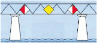 |
✓ Рекомендуемый пролёт со встречным движением и боковым ограничением разрешённого прохода под мостом.
□ Рекомендуемый пролёт без встречного движения и с боковым ограничением разрешённого прохода под мостом.
□ Предписанный пролёт со встречным движением и боковым ограничением разрешённого прохода под мостом.
□ Рекомендуемый пролёт со встречным движением без бокового ограничения разрешённого прохода под мостом.
|
| 244. Что означает этот знак у пролёта моста?
|
✓ Запрет прохода и закрытие судоходства.
□ Закрытый пролёт, однако доступен для маломерных судов с двигателем.
□ Закрытый пролёт, однако доступен для маломерных судов без двигателя.
□ Охраняемое сооружение.
|
| 245. Почему при прохождении через шлюз запрещено использовать автомобильные шины в качестве кранцев? |
✓ Автомобильные шины не являются плавучими и могут вызвать серьёзные неполадки в шлюзах.
□ Автомобильные шины создают слишком большое трение.
□ Автомобильные шины оставляют чёрные следы на борту судна и стенах шлюза.
□ Автомобильные шины являются плавучими и могут вызвать серьёзные неполадки в шлюзе.
|
| 246. Какие огни несёт толкаемый состав? |
✓ Три белых топовых огня, расположенных треугольником, бортовые огни и три белых кормовых огня в горизонтальный ряд.
□ Три белых топовых огня, расположенных вертикально один под другим, бортовые огни и три белых кормовых огня в горизонтальный ряд.
□ Три белых топовых огня, расположенных треугольником, бортовые огни и два белых кормовых огня в горизонтальный ряд.
□ Три белых топовых огня в горизонтальный ряд, бортовые огни и три белых кормовых огня в горизонтальный ряд.
|
| 247. Какое судно несёт на носу красный вымпел? |
✓ Судно, имеющее приоритет при шлюзовании.
□ Судно, имеющее приоритет при погрузке и разгрузке.
□ Судно, перевозящее взрывчатые вещества.
□ Судно, перевозящее легковоспламеняющиеся вещества.
|
| 248. Когда маломерное судно на внутренних водных путях считается маломерным? |
✓ Если длина судна составляет менее 20 м.
□ Если длина судна составляет 20 м.
□ Если длина судна составляет 25 м.
□ Если длина судна составляет более 20 м.
|
| 249. Какое значение имеет обозначение судна красно-белым флагом и что необходимо учитывать? |
✓ Охраняемое судно; снизить скорость и избегать засасывания и волнения.
□ Охраняемое судно; сохранять скорость и избегать засасывания и волнения.
□ Охраняемое судно; снизить скорость.
□ Охраняемое судно; избегать засасывания и волнения.
|
| 250. Какой визуальный сигнал может подаваться днём вместо четырёх коротких тонов? |
✓ Круговое вращение красным флагом в нижней полуокружности.
□ Круговое вращение красным флагом в верхней полуокружности.
□ Круговое вращение красным флагом по полному кругу.
□ Показать красный флаг.
|
| 251. Какой визуальный сигнал может подаваться ночью или при ограниченной видимости вместо четырёх коротких тонов? |
✓ Круговое вращение красным огнём в нижней полуокружности.
□ Круговое вращение красным огнём в верхней полуокружности.
□ Круговое вращение красным огнём по полному кругу.
□ Показать красный огонь.
|
| 252. Какой документ о профессиональной пригодности необходим для участия во внутренней судоходной радиосвязи? |
✓ Свидетельство УКВ-радиотелефонной связи для внутреннего судоходства.
□ Свидетельство CB-радиотелефонной связи для внутреннего судоходства.
□ Свидетельство морской радиосвязи для внутреннего судоходства.
□ Свидетельство SRC для внутреннего судоходства.
|
| 253. Что означает «плавание по радару»? |
✓ Плавание в условиях ограниченной видимости с использованием радара.
□ Плавание в ночное время с использованием радара.
□ Плавание с использованием радара.
□ Плавание в дневное время с использованием радара.
|
Beelendorfer Dorfstraße 23 A 14542 Werder/Havel pa-berlin-potsdam@dmyv.de 03327/7412225
Экзаменационная комиссия Nürnberg Jochen Grees (Büro Tremel) von-Kling-Weg 12 86669 Königsmoos
pa-nuernberg@dmyv.de 08433/9297491
Экзаменационная комиссия Regensburg Udo Hilbinger Hauptstraße 2 a 93339 Riedenburg pa-regensburg@dmyv.de
09442/2720